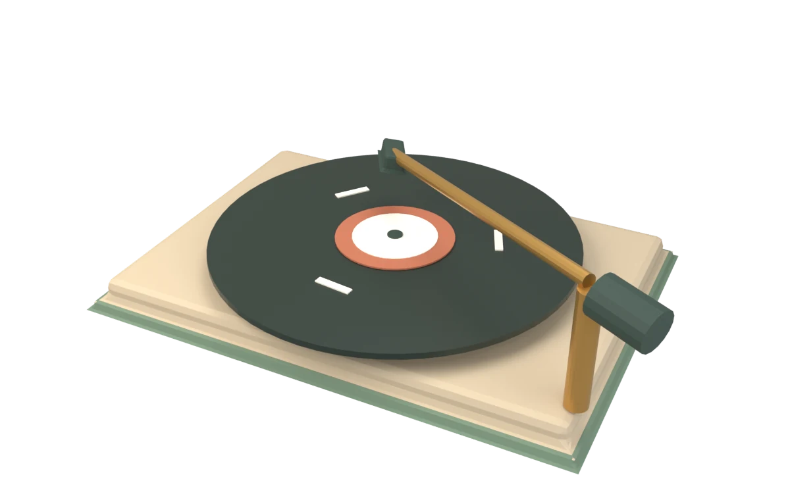
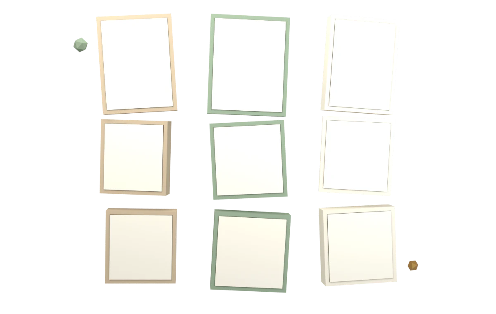

最新笔记
全部 →照片墙
全部 →THE COLLECTION
课程笔记 / Notes
Markdown 编辑器
粘贴图片会生成本地预览；下载文章后，请将图片也上传到仓库并改用相对路径（例如 images/photo.png），才能在线显示。
本篇目录
LINKS
个人工具 Links
常用站点与自建工具。
怎么编辑这个列表
打开仓库里的 data/links.json，按现有格式添加一条：
{
"name": "显示名称",
"url": "https://example.com",
"desc": "一句话说明",
"tag": "分类"
}保存后提交推送即可，无需改代码。
ARCHIVE
归档
按年份倒序排列。
MUSIC
音乐
随手放几首正在听的歌。

GALLERY
照片墙
来自独立相册目录 photos/，共 0 张。点击可放大。新增照片后运行 python tools/build_photos.py 更新索引。

DIARY
个人日记
记录一些日常，公开的部分会出现在这里。
隐私边界（请先读）
GitHub Pages 是公开站点，写进仓库的文件任何人都能下载查看，包括被页面隐藏的文件。所以：
- 私密日记不要提交到仓库（
data/diary-all.json已被.gitignore忽略）； - 构建期过滤：
python tools/filter_diary.py只会把public: true的条目写进data/diary.json； - 页面下方的「本地草稿」只存在你这台电脑的浏览器里，别人看不到，也不会上传——要长期保存请导出 Markdown。
仅自己看 · 本地草稿
存在浏览器 localStorageGUESTBOOK
留言榜
基于 GitHub Discussions 的 Giscus 评论系统，与本站同源同账号，无需额外后端。
如果点击登录没有反应，请允许本站弹窗与第三方 Cookie；或先 在新标签打开 GitHub 登录，登录后回来刷新本页。
ABOUT